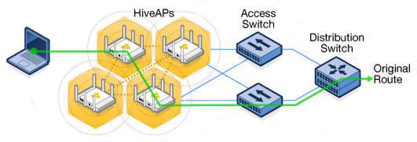
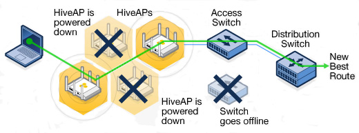

Wireless Mesh Networks: cases of use¶
Introduction to WMNs¶
A computer network is defined as a telecommunications network, which allows computers to exchange data. In computer networks, networked computing devices exchange data with each other using data links. The connections between nodes are established using either cable media or wireless media [1].
A wireless mesh network, furthermore, is a communications network made up of radio nodes organized in a mesh topology [2]. In this particular configuration, nearby nodes are connected together with a radio link, allowing direct communication between neighbours; couples of nodes far away from each other can get in contact establishing indirect connections using neighbours, neighbours of neighbours and so on.
WMN schemes could be a good alternative to wired ones in many industrial facilities. This because wired communications could be difficult to install, too much costly or not flexible enough to support quick process reconfiguration.
Since 2000s WMN’s system was adopted by communities around the world which started to develop an alternative to ISP’s networking. Today some of those networks reach tens of thousands of users (e.g. Guifi, Freifunk), which retain the full control and ownership of the infrastructure, and benefit from exclusive independent services.
Business Applications¶
WMNs should be considered as a good choice in different scenarios. Industry 4.0 and “smart factories” are based on real time control and interconnection between machines; a flexible and reliable network is becoming a key weapon for the industries. A one-size-fits-all network system doesn’t exist: physical wiring and radio transmission can be used, even together, to match the best cost-benefit balance.
Wireless networks can significantly enhance the efficiency, productivity, safety, security and scalability in small and large production plants, especially where other systems lacks (e.g. wiring, cellular coverage, ecc.), providing cost effective communications for process control sensors.
Examples of WMNs are given by:
- oil and gas exploration and production plants [3]
- mines
- off-shore systems
- automated meter readings (AMR)
- military forces in field operations
- surveillance
- the 66-satellite Iridium constellation
- wireless internet service providers (WISP)
- digital signage

Figure 1-1 Example of industrial control system, TropOS Wireless Communication System ©Copyright 2013 ABB
Pros and Cons¶
One of the simpler example of the WMN usefulness, because of the large usage of wireless devices, comes from security and video acquisition. Data sources could easily be mobile ones or be installed in insulated locations. In that situation every device, from cameras to antennas, could be a node of the mesh. Every WMN could take advantage from this.
Figure 1-2 Example of outdoor surveillance network - Rajant kinetic mesh
Another absolute upside is redundancy. It works as following: when one node can no longer operate (a), the rest of the nodes can still communicate with each other, directly or through one or more intermediate nodes (b). Doing so, the network’s reliability results increasingly higher with increasing number of nodes.

|
(a) |

|
(b) |
Figure 1-3 Example that clarify redundancy in WMN - aerohiveworks.com
Wireless networks support multiple other applications and user groups concurrently. The same physical infrastructure can be leveraged for applications such as SCADA, emergency shutdown, process control, video analytics, mobility and Wi-Fi access [4].
On the other side, there are some disadvantages while using WMN. The first one regards the network size, in terms of nodes and connections. If the topology is not as dense as required, reliability could be severely compromised, and all the network could be split up in more disconnected islands. Adding more nodes to the network, or applying a hybrid solution with other technologies could solve this problem.
The second major problem concerns performances, more specifically the delay, namely how long it takes for a bit of data to travel across the network from one node or endpoint to another [5].Delay depends on the network protocol, the number of nodes and connections, the topology of the network and the end points of the communication. The reason is that in mesh networks data packets have not a single way to go from point A to point B, this because of the redundancy. The network protocol adopted decides which route is the best, most of times in terms of speed, but in every moment that path could change. The issue lies here, in the fluctuation of the route from point A to point B, that reflects on a contraction or dilatation of the delay. Here again a solution could be provided by a network upgrade.
In conclusion WMN is a brilliant solution for big scale built from scratch networks, and for wide external areas, but a good infrastructure is needed to provide reliability and high performances.
Wireless Community Networks¶
The most widespread mesh network in the world, capable of addressing the largest number of companies and private citizens, is internet. It is not necessary to spend time explaining why it is so important for our society, but the attention should be focused on its shadow: the digital divide. This phenomenon has to do with that people who don’t even know that internet exists, and folks beyond the reach of the fundamental technological breakthroughs. Just to have an idea of the digital divide magnitude, just think that in 2014 the 20% of EU citizens did never use the Internet [6].
The Internet exists thanks to the solid massive infrastructure that provides a physical connection between computers (i.e. copper wires and optical fibre), and a wireless equipment able to establish point-to-point or multi-point links. Through this cluster of links, users can benefit from thousands of services; that transform users in clients, and the infrastructure provider a vendor. The vendor is often a national ISP or another commercial (for-profit) operator. The concentration of customers in small areas and their grouping in buildings, make it a great business for commercial telecom providers; as the population density decreases and the distance to major cities increases or the economic capaciy of customers’ decreases, the margin for commercial exploitation decreases or becomes negative [7]. In this scenario is easy to understand why disconnected people are mostly those who live in rural areas.
One of most promising solutions for the digital divide problem are the Wireless Community Networks, which are a particular case of WMNs applied in a community scale. WCNs are bottom-up projects developed by a community of people that builds its own network infrastructure, primarily (but not exclusively) made of wireless links.
This kind of networks, in facts, started in digital divided areas thanks to some of their key features:
- they can be made with very cheap equipment
- they can provide services and digital instruments which fit the community’s needs
- if just one node is connected to internet, it can provide internet to the whole network
WCNs now become hundreds, all around the world. New ones where born to provide an alternative to the monopoly of the ISPs (e.g. In New York with NYCmesh.net), or even to fight the data collection of the big companies, or the censorship of some restrictive governments.
Goals of the project¶
The whole documentation of this project is open source, and its core objective is to improve expandability, maintainability and optimization of WCN in the world. The belief behind this work is that such of networks promote a healthy idea of local cooperation and self-sustenance that works like a catalyst for social and economic innovations.
Since the project is born to help communities, the main objective is keeping the entire system cheap and easy to use. That, inter alia, makes this project fully consistent with productive environments needs.
Before entering into the details, it’s useful to preface some definition to better understand following parts of this work.
Antennas are one of key elements for wireless networking, and they could be classified in two macro classes: directional ones and omni-directional ones. Directional antennas could generally provide a long distance communication, but have a slightly concentrated beamwidth; omni-directional antennas, on the other side, provide a 360° coverage angle, but can’t reach distances comparable to the other ones.
Omni-directional antennas represent the best solution for indoor installations or, in general, for that situations where an homogeneous spread out network is needed. Those networks are typically made of planar antenna arrays.
Directional antennas are the best solution given for long-range links. This type of antenna is helpful in near LOS (Line-Of-Sight propagation) coverage, such as covering hallways, long corridors, isle structures with spaces in between, etc [8]. The idea of the project is to keep the great advantage offered by the possibility of connecting sparse nodes, without the limitation of having a still and immutable topology. This could be achieved using a remote controlled automatic system capable of changing the antenna orientation.
It is possible to buy some self-rotating directional antenna in the market, but in general they are not suitable for the purposes of this project, since they are heavy weight, difficult to fit on poles, excessive current consuming or too much expensive.
Getting dynamic WMN¶
Directional antennas are very powerful, as they could establish several kilometres long links; the biggest problem here is the network rigidity. Some nodes could fail, sometimes antennas could be hard to mount correctly or more power could be temporarily needed over a particular area. In those cases the only thing to do is to manually change the topology.
Problems could come from a bad distribution of the data flow. During the network lifetime some links could be overloaded as consequence of periodic events. For example, during the setup of a machine in the production shop, sensors, actuators and video acquisition could be emphasize in order to improve tests reliability. Assume that the network get saturated by this intense data traffic in the zone between the machine and the control centre, like a highway clogged by cars.
In WCN this effect was observed by the Ninux community in Calabria, where the network is all over the Cosenza city. Cosenza is located near a mountain, a strategic point where to install several directional antennas to serve the valley. They did so, and started using that to create new nodes instead of trying to find new paths between urban nodes. As a result, they found themselves with a busy node, slowed down by the heavy traffic.
In these two examples, even if the networks are only locally disturbed, it was possible to observe a considerably degradation of the overall performances. This effect is known as performance anomaly of 802.11b [9], and occurs every time a single link uses a lower bit rate than the others of the network. The solution here is to change the mesh topology in order to dilute the traffic through more pats.
Having the possibility to dynamically adapt the mesh every time is needed, is an advantage for the WMN in all the application fields, and helps to reduce the performance anomaly.
Benefits for meshers¶
For all the reasons listed before, a dynamic WMN is capable of reducing the investments in a long-lasting period. The initial higher hardware cost is balanced by an easier and faster network setup in its first phase, because the perfect targeting of antennas could be done remotely with much more precision; during its life, moreover, the network’s mesh could be changed, amplified or optimised without any effort.
This kind of network introduces the possibility to schedule self-running test routines during non-productive times. For example, periodically during the night, the network could run a procedure that test itself to find the most performing configuration; tests could be done to find alternative topologies, to find weaknesses in the structure, to optimize the network after an upgrade ecc.
When a crucial node fails, static networks could be heavily damaged. If the event don’t cause the fracture of the WMN in more disconnected islands, it could cause the creation of a bottleneck that will slow down the local area and, consequently, the entire network. Dynamically change the topology could be a good solution, permitting a better distribution of the traffic, less local overload and, in some cases, avoid the fracture of the network.
In summary, dynamic networks provide generally:
- easier and faster setup
- more control and reliability of the network
- very high testability
- performance optimization.
Benefits for WCN¶
This project was born initially to satisfy some needs of an Italian wireless community network: Ninux.
In Ninux, like in the vast majority of WCNs in the world, mesh networks are built and maintained by volunteers. In these networks directional antennas are often the best option, since long-distance links are very common. This also explains why WCN nodes are typically mounted onto roofs, pylons or some other kind of tall structures.
Unlike in industrial facilities, common people often lack of appropriate safety devices. Mounting and orienting antennas are not simple tasks, and could became very dangerous for inexperienced workers.
Once mounted, the hope is there won’t be problems to be fixed manually for a long time; but in WCN antennas are always mounted outside, subject to atmospheric agents and animals. Furthermore, some unexpected obstacles could black out the transmission (e.g. grown trees, cranes, reflecting or disturbing devices ecc.). There are a lot of reasons why community network’s topology sometimes needs to be modified, optimised or totally re-designed, and this means that someone has to climb onto the roofs again and change the orientation of every single antenna.
To make WCN growing easier, to minimise the number of high-altitude works, and to provide high flexibility to these community networks, a self-turning antenna could be an excellent solution.
| [1] | Wikipedia, “Computer network”, 2018 |
| [2] | Wikipedia, “Wireless mesh network”, 2018 |
| [3] | ABB Inc., “Oil and gas exploration and production”, 2016, Document ID: 9AKK105713A0311 |
| [4] | ABB Inc., “Top 10 reasons to use ABB Wireless”, 2017, Document ID: 4CAE000410 REV 1000 26.7.2017 |
| [5] | Wikipedia, “Network delay”, 2017 |
| [6] | Europa.eu, “EU Digital Divide Infographic”, 2014 |
| [7] | netCommons, “Report on the Existing CNs and their Organization (v1)”, 2016 |
| [8] | Cisco, “Omni Antenna vs. Directional Antenna”, 2007, Document ID: 82068 |
| [9] | IEEE, M. Heusse, F. Rousseau, G. Berger-Sabbatel, A. Duda, “Performance Anomaly of 802.11b”, 2003, DOI: 10.1109/INFCOM.2003.1208921 |